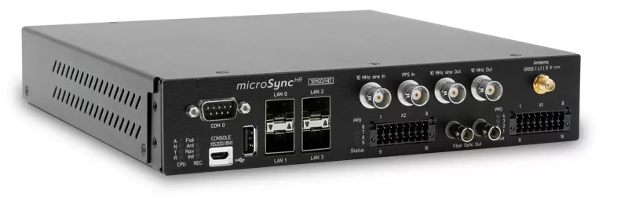
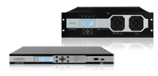
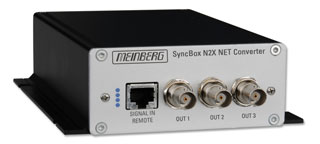
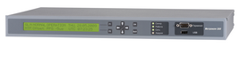

Чувство такта в сетях электросвязи
Синхронизация базовых станций сотовых сетей связи, систем цифрового телевидения и радиовещания, спутникового оборудования. Источники тактовых сигналов Подробнее...
Электронный город
Решения на основе серверов Метроном в рамках реализации программ: "Информационный город", "Электронная Москва", "Безопасный город" Подробнее...
Синхронизация базовых станций сотовых сетей связи, систем цифрового телевидения и радиовещания, спутникового оборудования. Источники тактовых сигналов Подробнее...
Электронный город
Решения на основе серверов Метроном в рамках реализации программ: "Информационный город", "Электронная Москва", "Безопасный город" Подробнее...
Наши серверы используются в
ФГУП «Всероссийский научно-исследовательский
институт физико-технических и радиотехнических
измерений»
Mетроном microSync - многофункциональный сервер точного времени.
Метроном серии microSync сочетает в себе небольшие размеры и множество интерфейсов в различных форм-факторах. Подробнее...
Mетроном-1000 и Метроном-3000 - мультиформатная модульная платформа.
 Многоцелевое оборудование сетевой синхронизации-высокороизводительный сервер частоты и времени с резервированием модулей, обеспечивает надежную работу до 30000NTP клиентов.Метроном-1000
Метроном-3000
Устройство синхронизации SyncBox (для IEEE1588).
 SyncBox – это генератор множества стандартных сигналов синхронизации для различного оборудования. Работает по протоколу IEEE1588 от внешнего сервера точного времени, например, Метроном-600/GLN/PTP с первичными часами PTP. Подробнее...Метроном-300 - сервер точного времени, первичный эталонный источник!
 Самый распространенный из семейства NTP-серверов. Широкий спектр применения для синхронизации различных сетевых устройств при отличном соотношении "цена/функциональность" Подробнее...
ООО "Прайм Тайм"
127322, Москва, ул. Яблочкова д.21, корп. 3
Телефон/Факс: +7(495) 616-10-00
127322, Москва, ул. Яблочкова д.21, корп. 3
Телефон/Факс: +7(495) 616-10-00